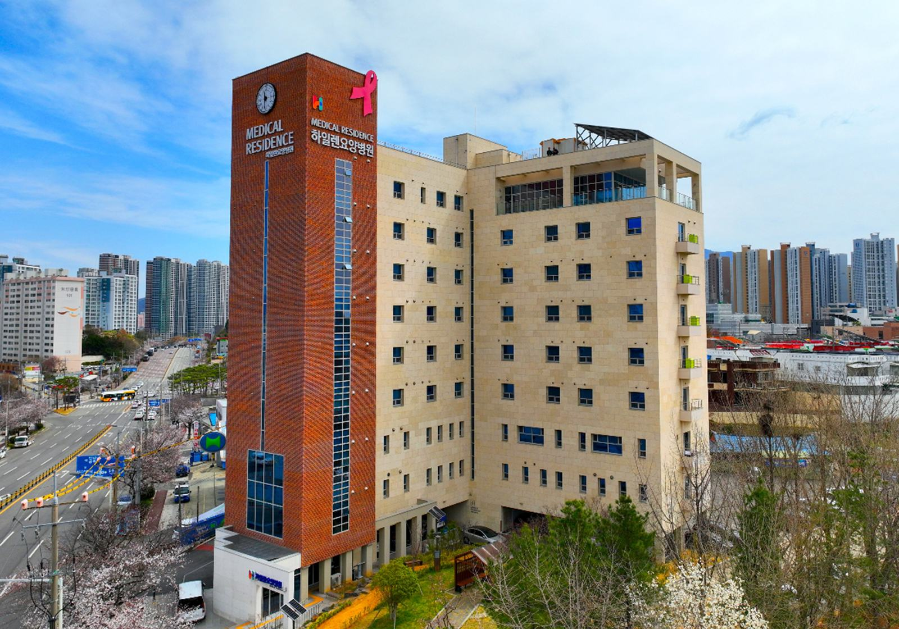
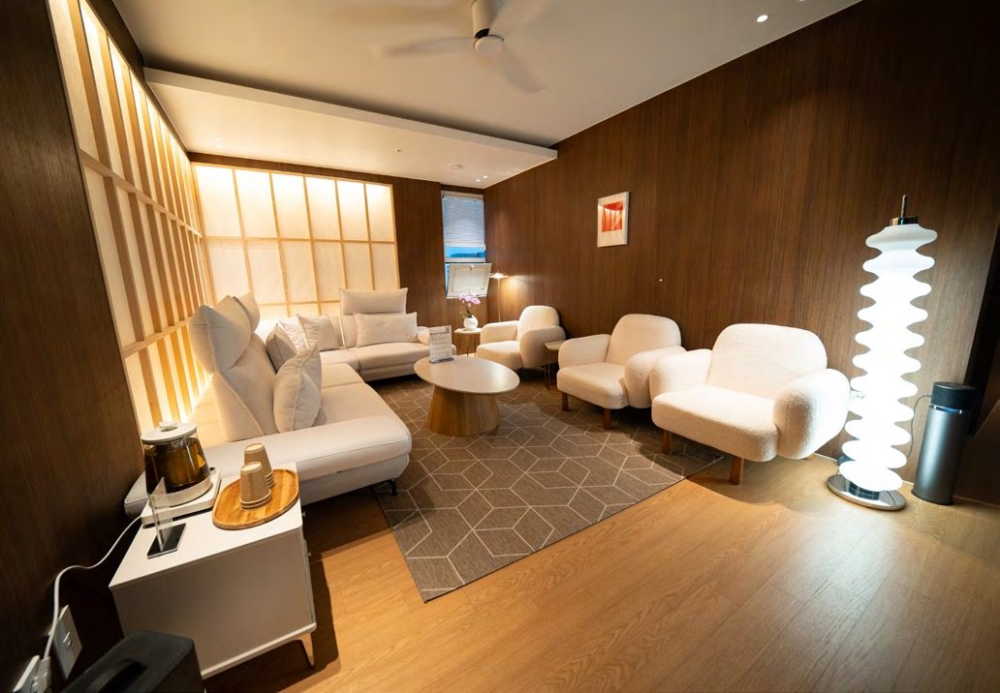
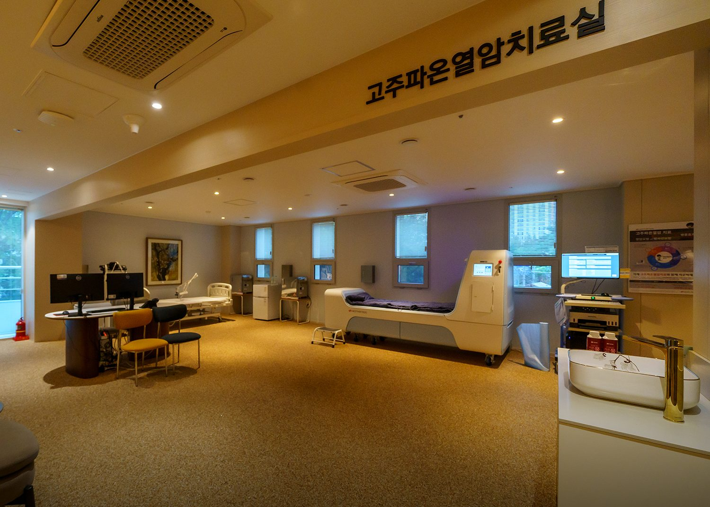
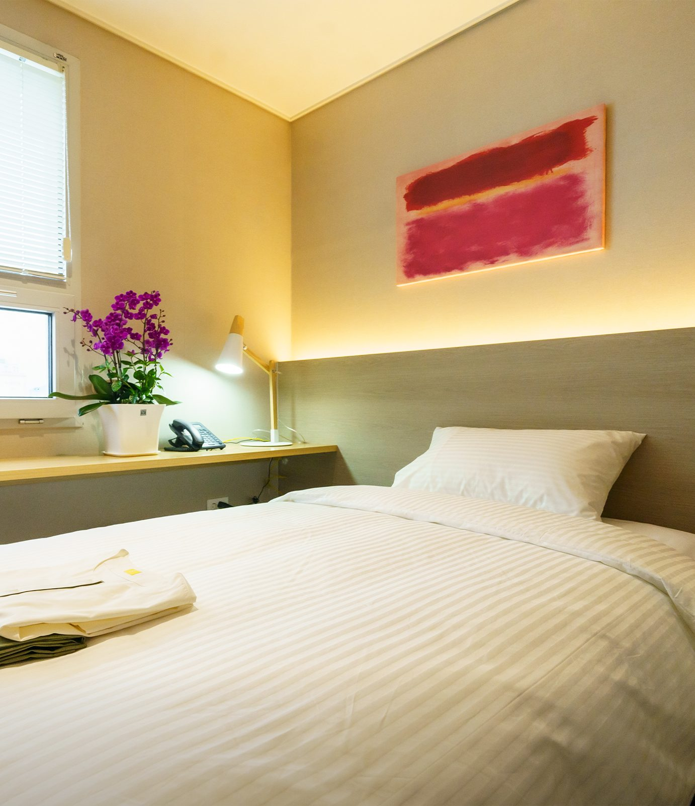
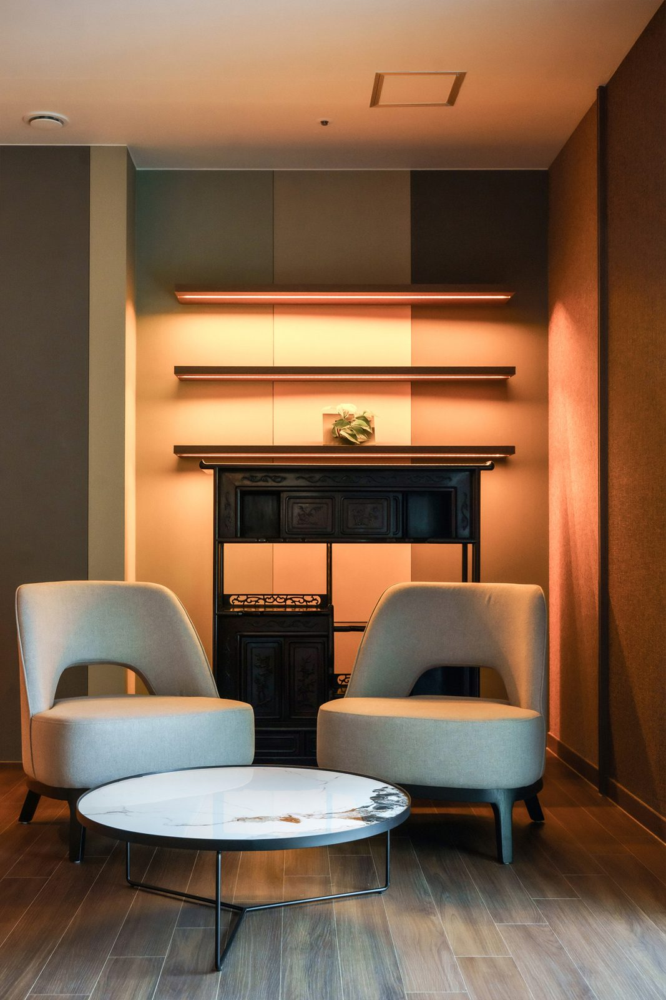
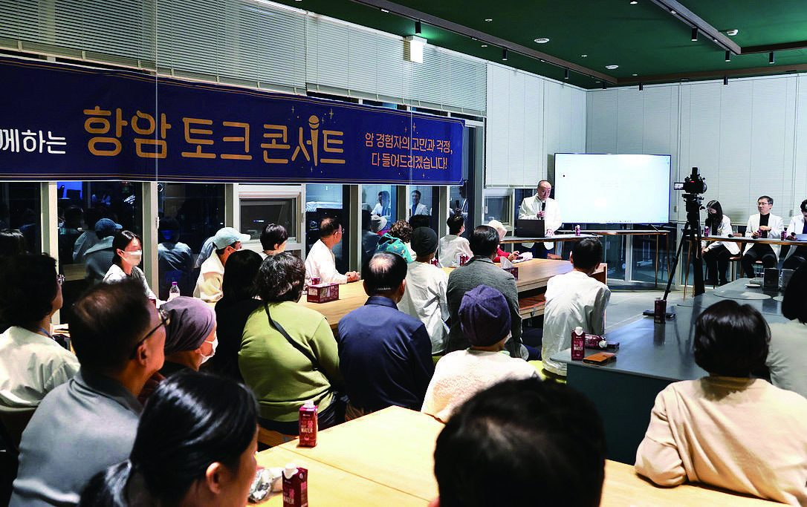

첫 화면

수술·항암·방사선 치료 사이,
당신이 기댈 수 있도록
하일렌이 함께합니다.
암중점 메디컬레지던스 암 치료 중 생기는 부작용과 합병증을 치료하는 전남광주 서구 암요양병원입니다.
- 의료진 24시간 상주 밤에도 당직 의료진이 확인해 처방합니다.
- 주사·상처관리 전담팀 수술 부위와 케모포트를 수술받으신 병원 지침대로 살핍니다.
- 주말·공휴일에도 치료 입원·외래 원내 치료가 주말과 공휴일에도 이어집니다.
입원·단기입원·외래 진료
치료 일정은 다니시는 대학병원·암병원을 그대로 따르고, 머무시는 방식은 몸 상태에 맞춰 정합니다.

온열암치료실
암요양병원의 핵심 시설입니다. 2층 온열암치료실에서 고주파온열암치료·고압산소치료·전신온열치료를 합니다.
고주파온열암치료
고주파온열암치료(High-Frequency Hyperthermic Cancer Therapy)는 고주파를 암조직에 가하는 온열 치료법입니다.
고압산소치료
고압산소치료(Hyperbaric Oxygen Therapy)는 고농도의 산소를 흡입하는 치료법입니다.
전신온열실
전신온열치료(Whole-body Hyperthermia Chamber)는 전신에 열을 가하는 온열 치료법입니다.

생기 있는 회복공간
도심 속 조용한 병실을 1인실 위주로 꾸렸습니다. 치료 이후의 여정을 이곳에서 함께합니다.


의료진 소개
암중점 의료진을 소개합니다.
암정보 도서관

인증 내역
협력 병원
상담
궁금한 점이 있으시면 언제든 편하게 물어봐 주세요. 카카오톡 채널에서 입원 상담과 프로그램 예약을 하실 수 있고, 단기입원 예약도 받습니다.
입원·외래·단기입원 상담은 원내 상담실에서 도와 드립니다.
병원 개요
암중점 메디컬레지던스는 환자분이 병원에 머무시며 암 치료 중 생기는 부작용과 합병증을 의료진에게 치료받으신다는 뜻입니다. 하일렌요양병원은 전남광주통합특별시 서구 상무대로 1176에 있는 암요양병원입니다.
수술·항암·방사선 치료는 지금 다니시는 대학병원·암병원에서 그대로 이어 가시고, 치료 방침도 대학병원·암병원의 판단을 따릅니다. 하일렌요양병원은 국내외 진료 지침에 따라 수술 후 통증과 상처, 항암 중 발열·구토·손발 저림을 치료합니다. 방사선 치료 중에는 피부와 피로를 관리합니다.
의료진이 24시간 상주하고, 밤에도 당직 의료진이 확인해 처방합니다. 원내 치료는 주말과 공휴일에도 이어집니다. 입원, 1박 2일부터 단기입원, 외래 진료로 이용하실 수 있습니다. 상담은 카카오톡 채널과 전화 062-439-1000으로 받습니다.
제공 하일렌요양병원 · 갱신 2026-10-21